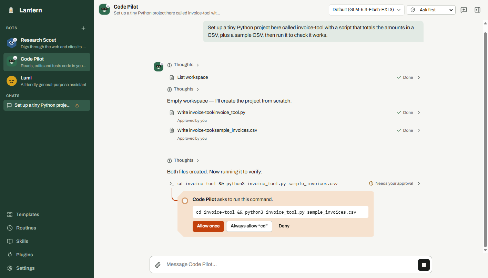
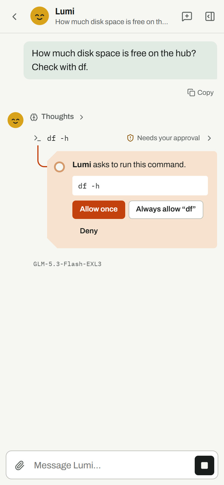
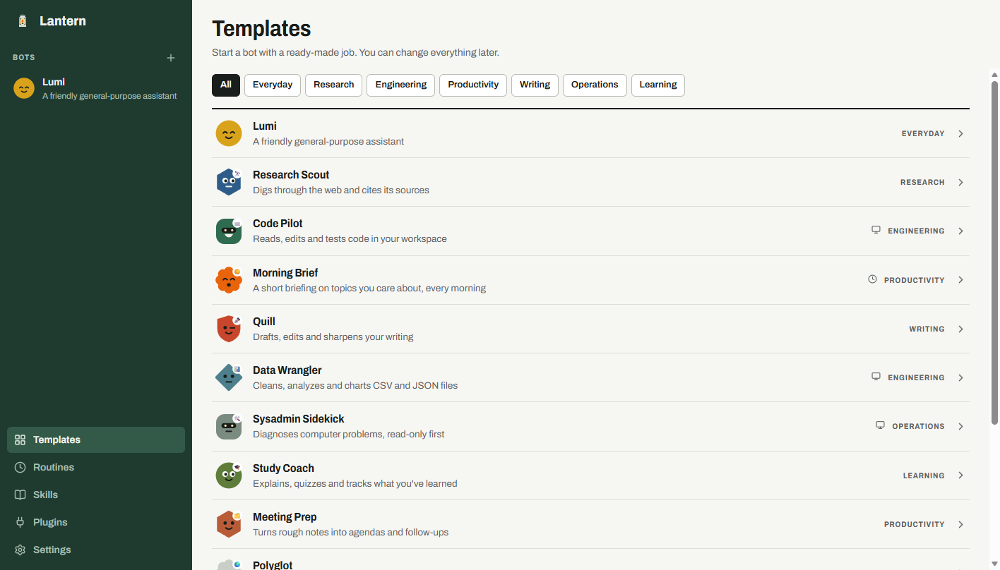

Lantern is an app for AI bots that run on models you host. Point it at Ollama, vLLM, llama.cpp or LM Studio and give a bot a job. It can read and write files, run commands and search the web.
Before it changes anything, it asks you.

A bot that can run commands on your computer should check with you. In Lantern every command and every file change waits on a tag like this one. Allow it once, allow that kind of command from now on, or say no.
If that gets tedious, turn on Auto-review: a model you pick looks at each action, waves through the routine work and stops to ask about anything risky. Your deny rules always win.
Code Pilot asks to run this command.
git push origin main
Lantern talks to anything that speaks the OpenAI API. Add your server, press Connect, pick a model.
| Server | Where it runs | Notes |
|---|---|---|
| Ollama | Your computer | The easy start: ollama pull qwen3 |
| vLLM, SGLang | Your GPU box | Turn on tool calling for bots that use tools |
| llama.cpp, LM Studio, Jan, KoboldCpp, LocalAI | Your computer | Any model they can load |
| OpenRouter, Together, Groq, Hugging Face | Hosted | Open models when you don't have the hardware |
Run a Lantern Hub on a small Linux server or a VM at home, and every device you connect shares the same bots, chats, memories, skills and secrets. A file a bot writes from your laptop is there when you ask from your phone. Phones get a terminal too, because commands run on the hub.
The hub also does the work. Start a task on your phone, lock it, and the answer is waiting when you look again. Routines run on time with every app closed, a webhook or a new email can start one, and you can talk to your bots from Telegram and get a push on your phone when one needs you.
Over Tailscale, your own devices connect with one tap and nothing is exposed to the internet. The hub also serves the installers, and the desktop apps update themselves from it. Updates are signed, so the apps only install releases signed with the project's key.

Subagents. A bot can pass a self-contained task to a helper that works on its own and reports back. Ask for three things at once and three helpers work in parallel. You see each helper's steps in the chat, and you still approve what it does.
Sandboxes. On a hub, a bot can live in a sandbox: its own folder, a read-only system, your other files out of sight, and the internet only if you allow it. Bots that handle untrusted code or downloads can do it in there.
Your other bots. A bot can ask another for help, or hand it a whole job and hear back when it's done. Make one your primary bot and it coordinates the rest, and each morning it offers to take work off your plate.
A browser of its own. For sites that need clicking or signing in, a bot drives its own browser on your hub. You can watch the page from any device and take over when it needs a code.

The latest release from GitHub.
SmartScreen may warn because the app isn't code-signed. Choose More info, then Run anyway.
Apple silicon and Intel. The app isn't notarized yet, so the first time, right-click it and choose Open.
Android 8 or newer. Your browser will ask before it installs an app from outside the Play Store.
Unpack it and run sudo bash install.sh ./lantern-hub. The hub guide covers the rest.
iPhone builds need an Apple developer account, so there isn't one to download yet. You can build Lantern yourself for any platform.